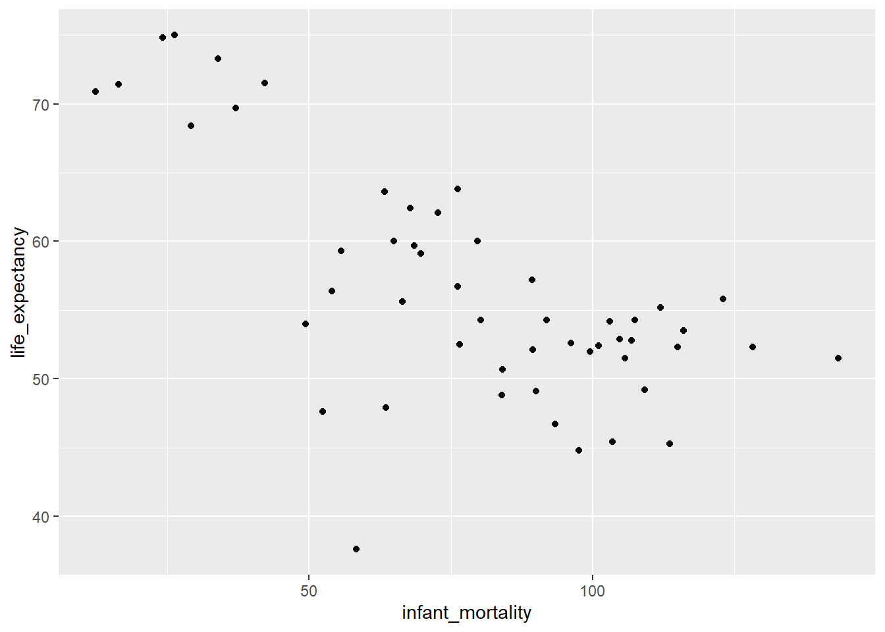
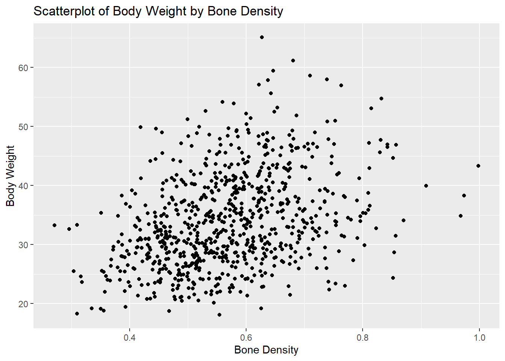
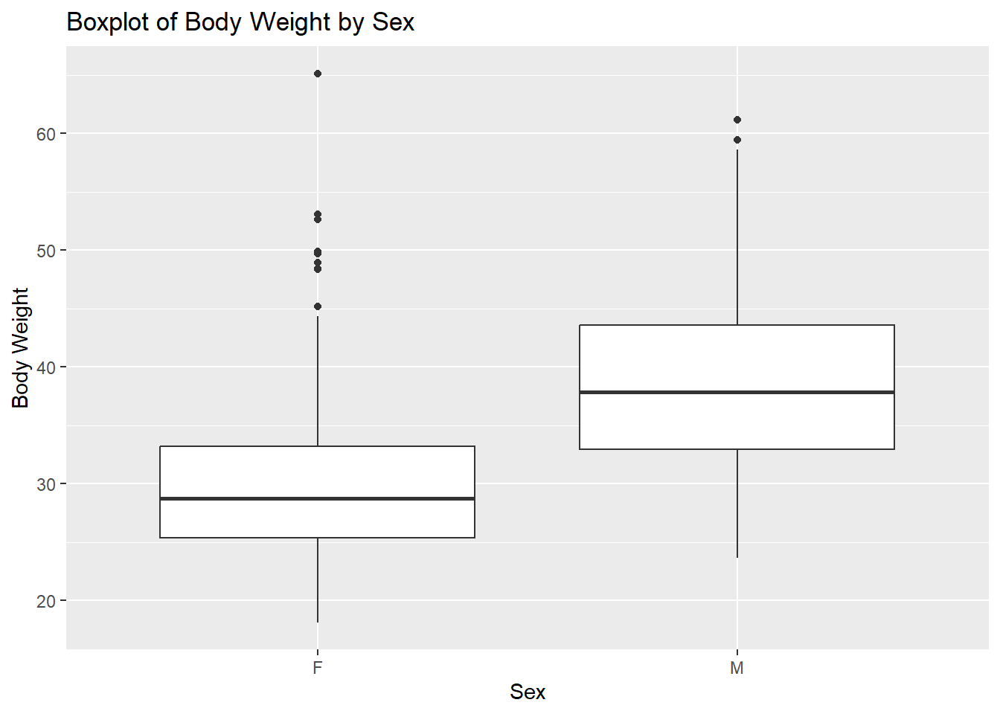

#Please install all packages not already installed using
#a command similar to one below
#install.packages("dslabs")
library(dslabs) #How we will access the dataset
library(tidyr) #For cleaning and analyzing the data
library(dplyr) #For creating pipes to sort, filter data
library(ggplot2) # For creating nice visuals
library(scales) # For scaling data R Coding Exercise
Analyzing Life Expectancy in Africa
We will be using data from the Gapminder package in R
Taking a look at the structure of the data
# This will give us dimensions and column details
str(gapminder)'data.frame': 10545 obs. of 9 variables:
$ country : Factor w/ 185 levels "Albania","Algeria",..: 1 2 3 4 5 6 7 8 9 10 ...
$ year : int 1960 1960 1960 1960 1960 1960 1960 1960 1960 1960 ...
$ infant_mortality: num 115.4 148.2 208 NA 59.9 ...
$ life_expectancy : num 62.9 47.5 36 63 65.4 ...
$ fertility : num 6.19 7.65 7.32 4.43 3.11 4.55 4.82 3.45 2.7 5.57 ...
$ population : num 1636054 11124892 5270844 54681 20619075 ...
$ gdp : num NA 1.38e+10 NA NA 1.08e+11 ...
$ continent : Factor w/ 5 levels "Africa","Americas",..: 4 1 1 2 2 3 2 5 4 3 ...
$ region : Factor w/ 22 levels "Australia and New Zealand",..: 19 11 10 2 15 21 2 1 22 21 ...Assessing the quartiles for each column
#This will give us an idea of how each column's data is spread out, and give us some insight about outliers
summary(gapminder) country year infant_mortality life_expectancy
Albania : 57 Min. :1960 Min. : 1.50 Min. :13.20
Algeria : 57 1st Qu.:1974 1st Qu.: 16.00 1st Qu.:57.50
Angola : 57 Median :1988 Median : 41.50 Median :67.54
Antigua and Barbuda: 57 Mean :1988 Mean : 55.31 Mean :64.81
Argentina : 57 3rd Qu.:2002 3rd Qu.: 85.10 3rd Qu.:73.00
Armenia : 57 Max. :2016 Max. :276.90 Max. :83.90
(Other) :10203 NA's :1453
fertility population gdp continent
Min. :0.840 Min. :3.124e+04 Min. :4.040e+07 Africa :2907
1st Qu.:2.200 1st Qu.:1.333e+06 1st Qu.:1.846e+09 Americas:2052
Median :3.750 Median :5.009e+06 Median :7.794e+09 Asia :2679
Mean :4.084 Mean :2.701e+07 Mean :1.480e+11 Europe :2223
3rd Qu.:6.000 3rd Qu.:1.523e+07 3rd Qu.:5.540e+10 Oceania : 684
Max. :9.220 Max. :1.376e+09 Max. :1.174e+13
NA's :187 NA's :185 NA's :2972
region
Western Asia :1026
Eastern Africa : 912
Western Africa : 912
Caribbean : 741
South America : 684
Southern Europe: 684
(Other) :5586 Verifying the type of object that we will be accesssing
class(gapminder)[1] "data.frame"# Tells us that R is viewing this as a data frame which will help us with maintaining column types and cleaning the datasetProcessing data
First we will segment only data from African countries into a new data frame.
# Using pipes from dplyr
africadata = gapminder |>
filter(continent == 'Africa') # Using two == signifies comparison operator vs assignment operatorNext we will create two new objects from this Africa data set, one with both Life Expectancy and Infant Mortality, and one with both Life Expectancy and Population.
africa_IM_LE = africadata[3:4] #Slicing only two columns of interest
africa_POP_LE = africadata[4:6] #Slicing three columns since we want both 4 and 6
africa_POP_LE = africa_POP_LE[-2] #Removing middle unneeded columnsLets take a look at the structure and summary of the two new data objects.
str(africa_POP_LE)'data.frame': 2907 obs. of 2 variables:
$ life_expectancy: num 47.5 36 38.3 50.3 35.2 ...
$ population : num 11124892 5270844 2431620 524029 4829291 ...str(africa_IM_LE)'data.frame': 2907 obs. of 2 variables:
$ infant_mortality: num 148 208 187 116 161 ...
$ life_expectancy : num 47.5 36 38.3 50.3 35.2 ...summary(africa_POP_LE) life_expectancy population
Min. :13.20 Min. : 41538
1st Qu.:48.23 1st Qu.: 1605232
Median :53.98 Median : 5570982
Mean :54.38 Mean : 12235961
3rd Qu.:60.10 3rd Qu.: 13888152
Max. :77.60 Max. :182201962
NA's :51 summary(africa_IM_LE) infant_mortality life_expectancy
Min. : 11.40 Min. :13.20
1st Qu.: 62.20 1st Qu.:48.23
Median : 93.40 Median :53.98
Mean : 95.12 Mean :54.38
3rd Qu.:124.70 3rd Qu.:60.10
Max. :237.40 Max. :77.60
NA's :226 Plotting
Plotting Life Expectancy as function of Infant Mortality.
africa_IM_LE |> # Using pipes again
ggplot(aes(x=infant_mortality, y=life_expectancy))+ #Using GGplot for better visualizations
geom_point() #geom_point is ggplots method for scatterplotsWarning: Removed 226 rows containing missing values (`geom_point()`).
We can clearly see a negative correlation between our variables of interest, implying as infant mortality increases, life expectancy decreases.
Next plotting Life Expectancy as a function of Population
africa_POP_LE |>
ggplot(aes(x = population, y =life_expectancy))+
geom_point()+
scale_x_log10(labels = label_comma()) #Using the scales library to scale the x axis with log10Warning: Removed 51 rows containing missing values (`geom_point()`).We generally see a positive correlation between these two variables. As in the previous plot we can note several ‘lines’ of data made up of datapoints very close to each other. These represent the data of distinct countries, year after year, increasing or decreasing.
Additional Data Processing
We need find a a singular year to explore.
In order to do that, we need to identify which years are not missing data for the Infant Mortality variable.
#We start by counting the number of NAs per country, per year
CountNAs = africadata |>
group_by(year) |> # When we group, we need to summarize
summarise(sum(is.na(infant_mortality)))#so we use the total number of NA values in this column to group on
CountNAs #Generating table# A tibble: 57 × 2
year `sum(is.na(infant_mortality))`
<int> <int>
1 1960 10
2 1961 17
3 1962 16
4 1963 16
5 1964 15
6 1965 14
7 1966 13
8 1967 11
9 1968 11
10 1969 7
# ℹ 47 more rows#Clicking through the table will show when the number of NAs drop to 0 for many years
plot(CountNAs) # Plotting our findings
As both the table and plot show, around 1981, the number of NAs for the Infant Mortality variable dropped to 0 until 2016, when the number of NAs jumped. So we need to choose a year between that year range.We will choose 2000 for this exercise.
# Creating a new data object
africa2000 = africadata |>
filter(year == 2000)# We only want rows where the year column is 2000
# Checking both the structure and summary of our new data object
str(africa2000)'data.frame': 51 obs. of 9 variables:
$ country : Factor w/ 185 levels "Albania","Algeria",..: 2 3 18 22 26 27 29 31 32 33 ...
$ year : int 2000 2000 2000 2000 2000 2000 2000 2000 2000 2000 ...
$ infant_mortality: num 33.9 128.3 89.3 52.4 96.2 ...
$ life_expectancy : num 73.3 52.3 57.2 47.6 52.6 46.7 54.3 68.4 45.3 51.5 ...
$ fertility : num 2.51 6.84 5.98 3.41 6.59 7.06 5.62 3.7 5.45 7.35 ...
$ population : num 31183658 15058638 6949366 1736579 11607944 ...
$ gdp : num 5.48e+10 9.13e+09 2.25e+09 5.63e+09 2.61e+09 ...
$ continent : Factor w/ 5 levels "Africa","Americas",..: 1 1 1 1 1 1 1 1 1 1 ...
$ region : Factor w/ 22 levels "Australia and New Zealand",..: 11 10 20 17 20 5 10 20 10 10 ...summary(africa2000) country year infant_mortality life_expectancy
Algeria : 1 Min. :2000 Min. : 12.30 Min. :37.60
Angola : 1 1st Qu.:2000 1st Qu.: 60.80 1st Qu.:51.75
Benin : 1 Median :2000 Median : 80.30 Median :54.30
Botswana : 1 Mean :2000 Mean : 78.93 Mean :56.36
Burkina Faso: 1 3rd Qu.:2000 3rd Qu.:103.30 3rd Qu.:60.00
Burundi : 1 Max. :2000 Max. :143.30 Max. :75.00
(Other) :45
fertility population gdp continent
Min. :1.990 Min. : 81154 Min. :2.019e+08 Africa :51
1st Qu.:4.150 1st Qu.: 2304687 1st Qu.:1.274e+09 Americas: 0
Median :5.550 Median : 8799165 Median :3.238e+09 Asia : 0
Mean :5.156 Mean : 15659800 Mean :1.155e+10 Europe : 0
3rd Qu.:5.960 3rd Qu.: 17391242 3rd Qu.:8.654e+09 Oceania : 0
Max. :7.730 Max. :122876723 Max. :1.329e+11
region
Eastern Africa :16
Western Africa :16
Middle Africa : 8
Northern Africa : 6
Southern Africa : 5
Australia and New Zealand: 0
(Other) : 0 Additional Plotting
Now, lets generate the same plots from before, with just data from Africa in the year 2000.
Plotting Life Expectancy as function of Infant Mortality
africa2000 |> # Our new data object
ggplot(aes(x=infant_mortality, y=life_expectancy))+
geom_point()
We still see the same negative correlation as before, albeit less strong.
Next plotting Life Expectancy as a function of Population
africa2000 |>
ggplot(aes(x = population, y =life_expectancy))+
geom_point()+
scale_x_log10(labels = label_comma()) #Using Scales againWe do not see a real trend in this plot, which differs from the initial plot with all the data from African.
Modeling
We will fit two models using two different predictors (infant mortality and population) to predict life expectancy.
fit1 = lm(life_expectancy ~ infant_mortality, data=africa2000) # Initializing model using infant_mortality as predictor
fit2 =lm(life_expectancy ~ population, data=africa2000)
#Model using Population as predictorNow we run summary() to display the results of our two model runs.
summary(fit1) #Summary will show us all the important info of our two models
Call:
lm(formula = life_expectancy ~ infant_mortality, data = africa2000)
Residuals:
Min 1Q Median 3Q Max
-22.6651 -3.7087 0.9914 4.0408 8.6817
Coefficients:
Estimate Std. Error t value Pr(>|t|)
(Intercept) 71.29331 2.42611 29.386 < 2e-16 ***
infant_mortality -0.18916 0.02869 -6.594 2.83e-08 ***
---
Signif. codes: 0 '***' 0.001 '**' 0.01 '*' 0.05 '.' 0.1 ' ' 1
Residual standard error: 6.221 on 49 degrees of freedom
Multiple R-squared: 0.4701, Adjusted R-squared: 0.4593
F-statistic: 43.48 on 1 and 49 DF, p-value: 2.826e-08summary(fit2)
Call:
lm(formula = life_expectancy ~ population, data = africa2000)
Residuals:
Min 1Q Median 3Q Max
-18.429 -4.602 -2.568 3.800 18.802
Coefficients:
Estimate Std. Error t value Pr(>|t|)
(Intercept) 5.593e+01 1.468e+00 38.097 <2e-16 ***
population 2.756e-08 5.459e-08 0.505 0.616
---
Signif. codes: 0 '***' 0.001 '**' 0.01 '*' 0.05 '.' 0.1 ' ' 1
Residual standard error: 8.524 on 49 degrees of freedom
Multiple R-squared: 0.005176, Adjusted R-squared: -0.01513
F-statistic: 0.2549 on 1 and 49 DF, p-value: 0.6159Model Conclusions
As expected model 1 (Predictor: Infant Mortality) has a significant effect (p-value is far below .05), and that effect is negative (intercept is -.1891).
Also as expected, model 2 (Predictor: Population) did not have a substantial effect (p-value .6 > .05).
This section contributed by Guillermo Gallardo
For this section, I will use the mice_weights database from dslabs. Our initial step involves exploring the dataset to offer a clearer explanation of its structure and contents.
Data Structure
This dataset contains 7 variables, including movie body_weight, bone_density, and sex, with a total of 780 observations.
str(mice_weights)'data.frame': 780 obs. of 7 variables:
$ body_weight : num 27.6 23 28.7 32.6 28.6 ...
$ bone_density: num 0.616 0.769 0.684 0.644 0.53 ...
$ percent_fat : num 7.26 4.95 6.02 9.54 6.99 ...
$ sex : Factor w/ 2 levels "F","M": 1 1 1 1 1 1 1 1 1 1 ...
$ diet : Factor w/ 2 levels "chow","hf": 1 1 1 1 1 1 1 1 1 1 ...
$ gen : Factor w/ 5 levels "4","7","8","9",..: 1 1 1 1 1 1 1 1 1 1 ...
$ litter : Factor w/ 2 levels "1","2": 1 1 1 1 1 1 1 1 1 1 ...Data Summary
Here’s a brief summary of the mice_weights dataset, this will help us understand the available data and identifying any potential outliers.
summary(mice_weights) body_weight bone_density percent_fat sex diet gen
Min. :18.13 Min. :0.2708 Min. : 2.552 F:398 chow:394 4 : 97
1st Qu.:28.09 1st Qu.:0.4888 1st Qu.: 5.566 M:382 hf :386 7 :195
Median :32.98 Median :0.5643 Median : 8.276 8 :193
Mean :34.08 Mean :0.5697 Mean : 8.594 9 : 97
3rd Qu.:39.37 3rd Qu.:0.6373 3rd Qu.:10.926 11:198
Max. :65.15 Max. :0.9980 Max. :22.154
NA's :4 NA's :4
litter
1:442
2:338
Data Type
class(mice_weights)[1] "data.frame"Processing Data
Now that we have a clearer understanding of the data, let’s create two objects for our analysis and include only the variables of interest.
Bone Weight and Bone Density
weight_density <- mice_weights %>%
select(body_weight, bone_density) %>% #selecting only two variables
filter(!is.na(bone_density)) #removing na (only 4)Body Weight and Sex
weight_sex = mice_weights %>%
select(body_weight, sex) #no na's in this oneObjects Structure
This object now has 776 observations instead of 780.
str(weight_density)'data.frame': 776 obs. of 2 variables:
$ body_weight : num 27.6 23 28.7 32.6 28.6 ...
$ bone_density: num 0.616 0.769 0.684 0.644 0.53 ...This object still has the 780 observations.
str(weight_sex)'data.frame': 780 obs. of 2 variables:
$ body_weight: num 27.6 23 28.7 32.6 28.6 ...
$ sex : Factor w/ 2 levels "F","M": 1 1 1 1 1 1 1 1 1 1 ...Objects Summary
summary(weight_density) body_weight bone_density
Min. :18.13 Min. :0.2708
1st Qu.:28.05 1st Qu.:0.4888
Median :32.95 Median :0.5643
Mean :34.05 Mean :0.5697
3rd Qu.:39.37 3rd Qu.:0.6373
Max. :65.15 Max. :0.9980 summary(weight_sex) body_weight sex
Min. :18.13 F:398
1st Qu.:28.09 M:382
Median :32.98
Mean :34.08
3rd Qu.:39.37
Max. :65.15 Plotting
Bone Density vs Body Weight
I included a scatterplot to visually examine the relationship between these two variables. It appears there is a positive relationship, and I will now proceed to create a linear model to explore this further.
ggplot(weight_density, aes(x = bone_density, y = body_weight)) +
geom_point() + #scatterplot
labs(x = "Bone Density", y = "Body Weight") +
ggtitle("Boxplot of Body Weight by Bone Density")
Bone Density vs Body Weight
Males generally weigh more, but females exhibit more outliers in weight distribution.
ggplot(mice_weights, aes(x = sex, y = body_weight)) +
geom_boxplot() + #boxplot
labs(x = "Sex", y = "Body Weight") +
ggtitle("Boxplot of Body Weight by Sex")
Linear Models
Body Weight ~ Bone Density
lmBD = lm(body_weight~bone_density, data = weight_density)
summary(lmBD)
Call:
lm(formula = body_weight ~ bone_density, data = weight_density)
Residuals:
Min 1Q Median 3Q Max
-17.0564 -5.5995 -0.8832 5.1219 29.5985
Coefficients:
Estimate Std. Error t value Pr(>|t|)
(Intercept) 19.159 1.401 13.67 <2e-16 ***
bone_density 26.139 2.414 10.83 <2e-16 ***
---
Signif. codes: 0 '***' 0.001 '**' 0.01 '*' 0.05 '.' 0.1 ' ' 1
Residual standard error: 7.538 on 774 degrees of freedom
Multiple R-squared: 0.1316, Adjusted R-squared: 0.1305
F-statistic: 117.3 on 1 and 774 DF, p-value: < 2.2e-16Body Weight ~ Sex
lmS = lm(body_weight~sex, data = weight_sex)
summary(lmS)
Call:
lm(formula = body_weight ~ sex, data = weight_sex)
Residuals:
Min 1Q Median 3Q Max
-14.960 -4.912 -0.899 4.338 35.391
Coefficients:
Estimate Std. Error t value Pr(>|t|)
(Intercept) 29.7588 0.3391 87.76 <2e-16 ***
sexM 8.8207 0.4846 18.20 <2e-16 ***
---
Signif. codes: 0 '***' 0.001 '**' 0.01 '*' 0.05 '.' 0.1 ' ' 1
Residual standard error: 6.765 on 778 degrees of freedom
Multiple R-squared: 0.2987, Adjusted R-squared: 0.2978
F-statistic: 331.4 on 1 and 778 DF, p-value: < 2.2e-16Conclusion
lmBD: After running the linear model, we observe a highly significant p-value (p < 2.2e-16), indicating a strong linear relationship between body weight and bone density. For every unit increase in bone density, body weight is expected to increase by 26.139 units. This model explains 13.05% of the variability in body weight.
lmS: The p-value is 2.2e-16, significantly smaller than our 0.05 significance level, allowing us to reject the null hypothesis and confirm a strong relationship between body weight and sex. On average, males weigh approximately 8.8207 units more than females. This model explains 29.87% of the variability in body weight.